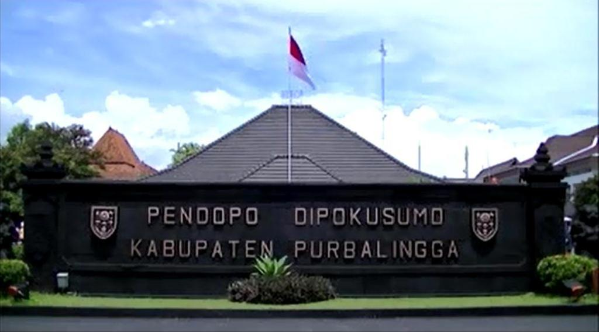

| Home | Profil | Visi Misi | Ragam Wisata | Ragam Kuliner |
|  |
Purbalingga adalah sebuah kabupaten di Provinsi Jawa Tengah, Indonesia. Ibu kotanya adalah Purbalingga. Kabupaten ini berbatasan dengan Kabupaten Pemalang di utara, Kabupaten Banjarnegara di timur dan selatan, serta Kabupaten Banyumas di barat dan selatan. Jumlah Penduduk Kabupaten Purbalingga tahun 2021 sebanyak 1.021.443 jiwa.
Purbalingga berada di cekungan yang diapit beberapa rangkaian pegunungan. Di sebelah utara merupakan rangkaian pegunungan (Gunung Slamet dan Dataran Tinggi Dieng). Bagian selatan merupakan Depresi Serayu, yang dialiri dua sungai besar Kali Serayu dan anak sungainya, Kali Pekacangan. Anak sungai lainnya yaitu seperti Kali Klawing, Kali Gintung, dan anak sungai lainnya. Ibu kota Kabupaten berada di Purbalingga, sekitar 21 km sebelah timur laut Purwokerto.
Sebuah nama yang pasti tidak akan tertinggal ketika membicarakan sejarah Purbalingga adalah Kyai Arsantaka, seorang tokoh yang menurut sejarah menurunkan tokoh-tokoh Bupati Purbalingga.Kyai Arsantaka yang pada masa mudanya bernama Kyai Arsakusuma adalah putra dari Bupati Onje II. Sesudah dewasa diceritakan bahwa kyai Arsakusuma meninggalkan Kadipaten Onje untuk berkelana ke arah timur dan sesampainya di desa Masaran (Sekarang di Kecamatan Bawang, Kabupaten Banjarnegara) diambil anak angkat oleh Kyai Wanakusuma yang masih anak keturunan Kyai Ageng Giring dari Mataram. Pada tahun 1740-1760, Kyai Arsantaka menjadi demang di Kademangan Pagendolan (sekarang termasuk wilayah desa Masaran), suatu wilayah yang masih berada dibawah pemerintahan Karanglewas (sekarang termasuk kecamatan Kutasari, Purbalingga) yang dipimpin oleh Tumenggung Dipayuda I. Banyak riwayat yang menceritakan tenang heroisme dari Kyai Arsantaka antara lain ketika terjadi perang Jenar, yang merupakan bagian dari perang Mangkubumen, yakni sebuah peperangan antara Pangeran Mangkubumi dengan kakaknya Paku Buwono II dikarenakan Pangeran mangkubumi tidak puas terhadap sikap kakanya yang lemah terhadap kompeni Belanda.
Dalam perang jenar ini, Kyai Arsantaka berada didalam pasukan kadipaten Banyumas yang membela Paku Buwono. Dikarenakan jasa dari Kyai Arsantaka kepada Kadipaten Banyumas pada perang Jenar, maka Adipati banyumas R. Tumenggung Yudanegara mengangkat putra Kyai Arsantaka yang bernama Kyai Arsayuda menjadi menantu. Seiring dengan berjalannya waktu, maka putra Kyai Arsantaka yakni Kyai Arsayuda menjadi Tumenggung Karangwelas dan bergelar Raden Tumenggung Dipayuda III. Masa masa pemerintahan Kyai Arsayuda dan atas saran dari ayahnya yakni Kyai Arsantaka yang bertindak sebagai penasihat, maka pusat pemerintahan dipiindah dari Karanglewas ke desa Purbalingga yang diikuti dengan pembangunan pendapa Kabupaten dan alun-alun. Nama Purbalingga ini bisa kita dapati didalam kisah-kisah babad. Adapun Kitab babad yang berkaitan dan menyebut Purbalingga diantaranya adalah Babad Onje, Babad Purbalingga, Babad Banyumas dan Babad Jambukarang. Selain dengan empat buah kitap babat tsb, maka dalam merekonstruksi sejarah Purbalingga, juga melihat arsip-arsip peninggalan Pemerintah Hindia Belanda yang tersimpan dalam koleksi Aarsip Nasional Republik Indonesia.Berdasarkan sumber-sumber diatas, maka melalui Peraturan daerah (perda) No. 15 Tahun 1996 tanggal 19 Nopember 1996, ditetapkan bahwa hari jadi Kabupaten Purbalingga adalah 18 Desember 1830 atau 3 Rajab 1246 Hijriah atau 3 Rajab 1758 Je.